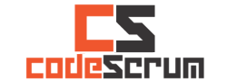

Hola Chicas!
Rails Girls toma lugar en Popayán los días 14 y 15 de diciembre del 2013, ven y diviertete con el mágico mundo de la programación con Ruby on Rails
Las inscripciones para el evento Rails Girls Popayan 2013 ya estan cerradas.
Aprenderas a diseñar, prototipar y codificar con la ayuda de nuestros tutores.
Necesitas tu propio computador (preferiblemente), curiosidad y una pizca de imaginación.
Quieres ayudar? Estamos buscando voluntarios y apoyos económicos Contáctanos.
| 10.00 - 10.40 |
RegistroRegistro de asistentes, entrega de material y organización del espacio. |
|---|---|
| 10.40 - 11.30 |
Reconocimiento y BienvenidaContextualización del evento, presentación de los miembros de la comunidad de Rails Girls Popayán, patrocinadores y de los asistentes al evento. |
| 11.30 - 13.00 |
Café e InstalaciónPresentación e instalación de las tecnologías acompañado de un delicioso café o té, ¿qué prefieres? |
| 13.00 - 14.30 |
Almuerzo libre |
| 14.30 - 15.00 |
Diseñando tu aplicación web - Workshop |
| 15.00 - 15.30 |
tryruby.orgCodificando... |
| 15.30 - 17.30 |
Workshop & CaféHaciendo nuestra primera aplicación web... |
| 17.30 - 19.00 |
Comprendiendo las aplicaciones webRecapitulación y foro de discusión sobre lo aprendido hasta el momento |
| 19.00 |
Charla con los tutores |
| 10:00 - 10.30 |
Retomando...Organización de las personas, presentación del resumen y los objetivos de la última jornada del evento. |
|---|---|
| 10:30 - 13.00 |
Workshop & Caféextendiendo nuestra aplicación... |
| 13.00 |
Clausura - charla abierta |
Las inscripciones para el evento han finalizado: Cerradas el 12 de Diciembre de 2013
Ubicación: Salón 101 FIET Unicauca Popayán Colombia
Rails Girls Popayán 2013 es llevado a cabo gracias al patrocinio de las siguientes organizaciones.
 Codescrum Creamos relaciones sólidas entre las empresas y sus clientes usando las últimas tecnologías móviles y de Internet. Nos apasiona la tecnología y los negocios. Ofrecemos la experiencia en tecnología web y móvil que su empresa necesita para ser mas productiva y obtener mejores rendimientos.
Universidad del Cauca La Universidad del Cauca es una institución de educación superior pública de carácter nacional con 180 años de historia. Ubicada en la ciudad de Popayán, ofrece sus servicios educativos a estudiantes de todo el país, quienes encuentran en la Universidad y la ciudad un espacio idóneo y tranquilo para realizar sus estudios de pregrado y posgrado.
 IEEE SSO IEEE es el Instituto de Ingenieros Electrónicos y Eléctricos, una organización mundial que reúne a estudiantes y profesionales en diferentes áreas de la Ingeniería y que tiene como objetivo poner la tecnología al servicio de la humanidad. IEEE Subsección Suroccidente de Colombia es la representación del instituto que reúne los departamentos de Nariño, Cauca y Valle del Cauca.
IEEE SSO IEEE es el Instituto de Ingenieros Electrónicos y Eléctricos, una organización mundial que reúne a estudiantes y profesionales en diferentes áreas de la Ingeniería y que tiene como objetivo poner la tecnología al servicio de la humanidad. IEEE Subsección Suroccidente de Colombia es la representación del instituto que reúne los departamentos de Nariño, Cauca y Valle del Cauca.
¿Cuánto es el costo para el ingreso al workshop? Nada, es gratuito, sólo necesitas buenas energías y ganas de aprender!
¿A quién va dirigido? Mujeres de cualquier edad con conocimientos básicos de computación. Hemos tenido gente de todas las edades que han participado en Rails Girls de otras ciudades. La mayoría de las orientaciones serán en español, sin embargo, la documentación y las guías estarán en ingles.
¿Pueden asistir hombres? Si, pero la prioridad en la lista de selección es para la chicas!
¿Cómo puedo ayudar? Estamos buscando tutores y apoyo económico. Contáctanos